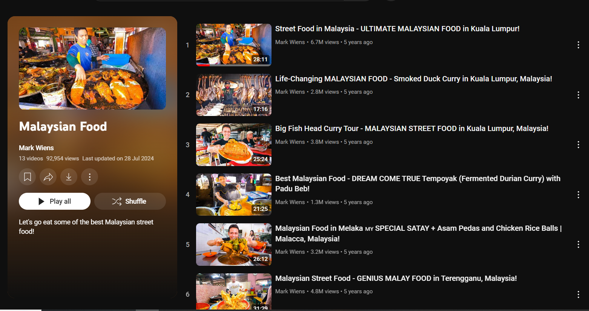
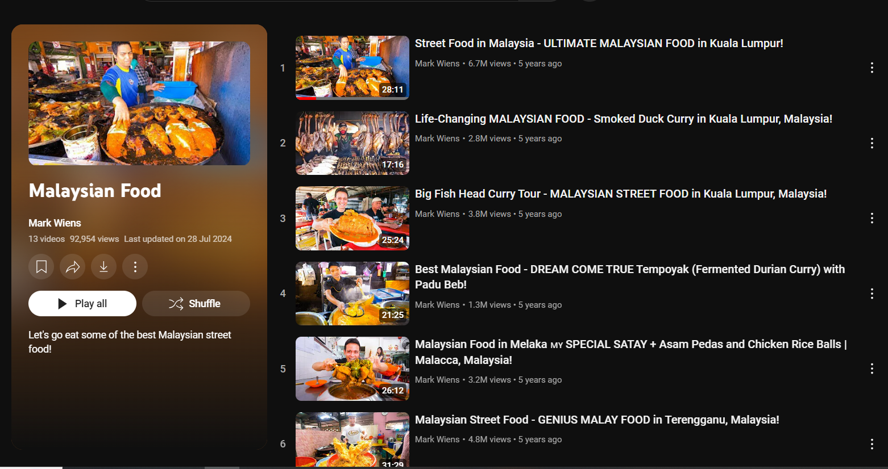

Welcome to Makan-makan Malaysia, your ultimate guide to the rich and diverse world of Malaysian cuisine! This site is dedicated to introducing people around the globe to the tantalizing flavors and unique culinary traditions of Malaysia. From the spicy and aromatic rendang to the sweet and creamy cendol, Makan-makan Malaysia showcases a wide array of dishes that reflect the country's vibrant cultural heritage. Join us on a culinary journey and discover the delicious delights that make Malaysian food so special!
Discover Malaysian Cuisine
In 2014, Malaysia Kitchen headed to the NEC Birmingham for the BBC Good Food Show where they hosted a stand showcasing the rich flavours and traditions that make Malaysian food so delicious.


Global Popularity of Malaysian Food
Malaysian food is becoming increasingly popular worldwide, thanks to the efforts of chefs and food ambassadors who bring these flavors to major cities. Dishes like Nasi Lemak, Laksa, and Satay are now enjoyed by people from all walks of life, showcasing Malaysia's culinary excellence on a global scale. In the TasteAtlas Awards 2023/24, Malaysian cuisine has been ranked 31st among 100 countries. Surprisingly, Roti Canai ranked second among 100 dishes.

Social Media and Malaysian Cuisine
The rise of social media has played a crucial role in spreading the popularity of Malaysian cuisine. Food enthusiasts and travelers share their culinary experiences and enticing visuals, generating interest and excitement among a global audience. This online buzz has introduced Malaysian flavors to new corners of the world.
@hungryfoodiekl SAVE THIS!! Hidden Japanese Restaurant in Sunway Pyramid!🇯🇵🍣 📍Hana Dining (pork-free, serves alcohol) Here's what we had: 1. Ume Sashimi Moriawase (RM50) 2. Una Maguro Maki (RM55) 3. Shake Oyako Don (RM27) 4. Hokkaido Don (RM50) 5. Chicken Katsu (RM28) 6. Tempura Moriawase (RM26) 7. Gindara Miso Yaki (RM35) 8. Smoke Duck Scallop Tobiko (RM16) 9. Okra (RM4) 10. Negima (RM6.50) 11. Shitake (RM5) 12. Original Burnt Cheesecake (RM16.90) 13. Mozu Shingen Mochi (RM8) 14. Yuzu Lychee Matcha Mocktail (RM16.90) 15. Ice Shaken Peach Passionfruit Tea (RM13.90) 【Hana Dining Sake Bar, Sunway Pyramid】 📍OB2.G.U1, 3, Jalan PJS 11/15, Bandar Sunway, 47500 Petaling Jaya, Selangor. 📌Enter from Parkson or Oasis Boulevard East Entrance ✅Pork-free, serves alcohol ⏰11:30am to 10pm daily 【Hana Japanese Dining, IPC Shopping Centre】 📍Ground Floor, IPC Shopping Centre, G23a, No.2, Jalan PJU 7/2, Mutiara Damansara, 47800, Selangor. ✅Pork-free, serves alcohol ⏰11am to 10pm daily ##klfoodie##kualalumpur##cafehoppingkl##cafehoppingmalaysia##fypシ##cafehopkl##foodhuntingmalaysia##foodhuntingkl##klfood##klfoodhunting##klfoodhunt#k#klfoodreviewk#klfoodiemyk#klfoodbloggerk#klcafe ♬ original sound - Hungry Foodie KL 🇲🇾
"Local Legends - A Malaysian Food Documentary" highlights the famous and mouthwatering hawkers in Malaysia, showcasing their struggles and journeys to success. This documentary allows people worldwide to learn about Malaysian cuisines and the inspiring stories behind them.
Malaysian Cuisine: A Tourist Attraction
Food tourism is booming in Malaysia, drawing visitors eager to explore its vibrant culinary landscape. From bustling food markets to renowned restaurants, Malaysia offers an authentic and immersive gastronomic experience that leaves a lasting impression on tourists, who then spread their appreciation for Malaysian cuisine worldwide.
:max_bytes(150000):strip_icc():format(webp)/gurney-drive-street-food-penang-59e9aa52d088c00011c80b3e.jpg)
 

Mark Wiens, a full-time eater and YouTuber, explored Malaysia, indulging in the diverse and vibrant local cuisines. His "Malaysia Food" playlist features 13 captivating videos, showcasing the rich culinary heritage of the country. Wiens' enthusiastic reviews and genuine appreciation for Malaysian food have influenced many Western content creators to explore and share their experiences. The delectable flavors and unique dishes of Malaysia have left a lasting impression, promoting the nation's food culture globally and inspiring others to discover and celebrate the culinary delights of Malaysia.